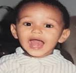
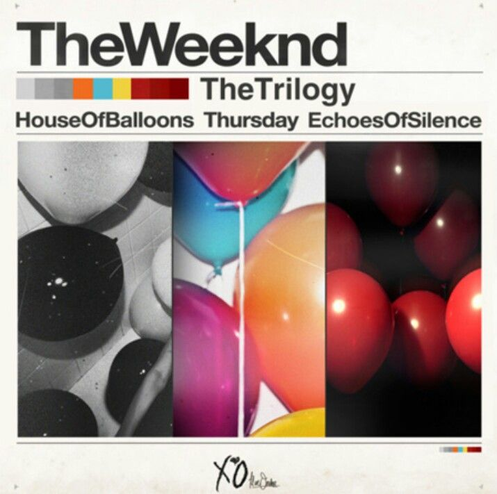
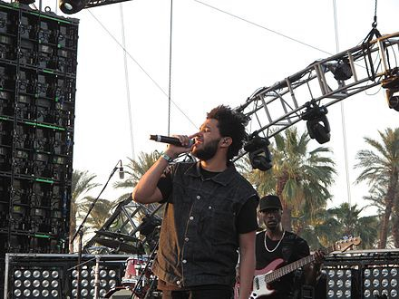
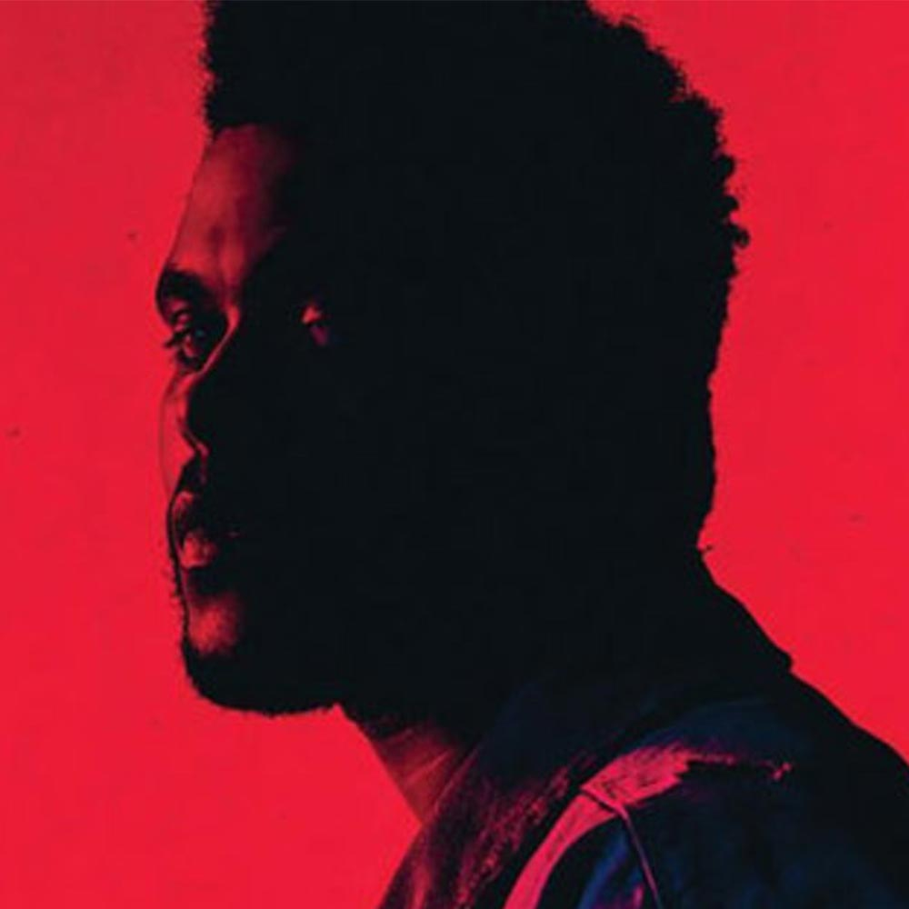

Introduction
First lets start wiht a small introduction about the weeeknd, known as Abel Makkonen Tesfaye, born in Toranto,Canadahe in the year 1990, is an icon of
singing in this century,as he started annynously singing in 2009,then later started the XO label.
The Weeknd has nomurs hits and awards, one of them winning the grammys award for the Best Urban Contemporary album, and having his
first album to hit #1 on the 200 billboard which was beauty behind the madness and so mush more well will talk about later.


As mentniod before the weeknd's joureny satrted in 2011, which he dropped his firts album house of ballons, it really sit the tone and theme of this charchter
and his enviorment, this outlandish drug enduced homelessness life style where his biggest concers was getting high and druged.
then in 2013 he dropped the trilogy whihc is his first three albums: house fo ballons, thurdsady and the echoes of silince, it contains 30 mixtape songs!
whihc it went to hold the no4 spot in the us 200 billboard in 2012.
then he went on to perfrom in Coachella festival, his first concert in the US, which was also in 2012.
And in 2013 he dropped his secound major album , kissland, and it was no.2 on the U.S.Billboard 200, and it sold over 273,000 copies in the United States!.


he went on to realse his third album Beauty behind the maddnes which was his big break through since it held earnd it which was his secound contribution to a
media pices which was the movie fifty shades of gray, and it was no.3 on the billboard
and we cant forget the hit song cant feel my face sitting on top of the billboard.
and not a year after he realsed his 4th album and technieclly his 3rd studio album, Starboy, his big bang, now the weeknd is evreywhere, you hear him on the
radio on your way to work, in the barbaer shop, littreily evreywhere, beacuse it had his biggest song ever starboy which has +2billion veiws on youtube alone,
which is crazy to think of
his album featured big artists such as lana del ray, daft punk, and the one and only kindrick lamar.


But as all good things happen they come to and end, but not the end you would excpet, since in 2017 he realsed another album called my dear melancoly in 2018,
and the reason being called that way beacuse it was about his break up with selena gomez, and whats crazy about it that althought the album was only six songs,
but it manged to get to the top of the billboard which in it self is a huge achivment since the preivose album to do so did 8 years before.
and in late 2019 he dropped two singles "bliding lights" and " heartless" teasing his next album which was :After hours, in 2020 and bliding lights is his
secound biggest hit after starboy, evreyone was listing to it in the loackdwon thats for sure.\
and not so shortly after he realsed his 6th album DawnFm in 2022, the pergetory after hell, and the biggest his from the album goes to sacrifice as it waas
realses as a single before the album in summer 2021.